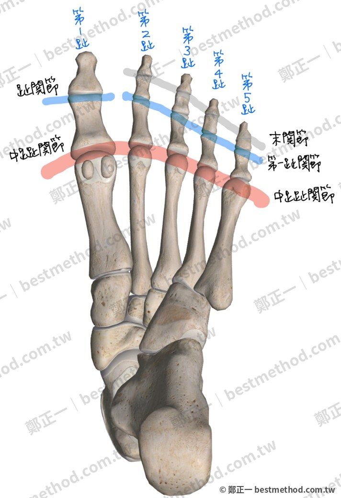

開啟系統
個案資料加密後存在這台裝置的瀏覽器；只有在您開啟「多裝置同步」時，才會把加密後的內容上傳。伺服器只記錄登入的 Email 與使用狀態，不儲存開啟密碼，忘記密碼無法還原，請定期「匯出備份」。
設定與備份
備份與還原
換手機、清除瀏覽器資料前，請先匯出備份檔。備份檔沒有加密，請自行妥善保管；匯入時會取代目前的資料。
刪除資料
刪除後無法復原；需要保留的話，請先「匯出備份」。
損害賠償試算表
個案受理（選填）
傷者資料（選填）
工作與就醫
事故與警方處理
我方的產險公司
對方資料
補充資料（選填）
車禍處理流程
- 事故當下報警並視需要叫救護車；拍下現場、車損、路況與號誌；保全行車紀錄器影像；向處理員警取得「道路交通事故當事人登記聯單」。
- 就醫與通知保險儘快就醫，保留診斷證明書與所有收據；通知自己的保險公司（強制險、任意險、傷害險、醫療險）。
- 事故 7 日後向警察機關申請現場圖、現場照片。
- 事故 30 日後申請「道路交通事故初步分析研判表」（初判表），作為肇事責任的初步依據。
- 對肇責有爭議事故 6 個月內申請行車事故鑑定（規費 3,000 元）；不服鑑定結果可再申請覆議。已進入偵查或審判的個案，由司法機關囑託鑑定。
- 申請強制險傷害醫療、失能、死亡給付向保險公司申請；對方肇事逃逸或未投保強制險時，改向特別補償基金申請。
- 試算請求金額用本系統逐項試算，扣除強制險給付並依過失責任比例計算，得出可向加害人請求的金額。
- 和解或調解雙方自行和解，或向鄉鎮市區調解委員會聲請調解；調解成立並經法院核定後，與確定判決有同一效力。
- 注意期限過失傷害為告訴乃論，刑事告訴期間為 6 個月；民事損害賠償請求權為 2 年。各期限的起算與到期日，請看「可以請求多少」的期限提醒。
- 調解不成立在期限內提起民事訴訟，或於刑事程序中提起附帶民事訴訟。
這是一般流程，個案情況不同時順序可能調整；期限與規費以各機關最新公告為準。
以下都是外部網站，點選後會另開視窗。網址若有變動，請以各機關公告為準。
警方資料與肇事鑑定
- 道路交通事故資料申請系統（內政部警政署）
線上申請現場圖、現場照片、道路交通事故初步分析研判表 - 車禍事故鑑定及覆議（交通部公路局）
行車事故鑑定、覆議的申請方式與表單；直轄市的事故由各市政府辦理 - 內政部警政署全球資訊網
交通事故處理相關公告
司法院與法規
- 司法院
訴訟須知、書狀範例、徵收費用標準 - 司法院裁判書查詢
查詢各級法院判決，可用「侵權行為損害賠償（交通）」等關鍵字 - 司法院辦案小工具
霍夫曼一次給付試算、折舊自動試算表、利息及違約金試算、司法規費試算、經過時間試算 - 司法院電子訴訟文書（含線上起訴）服務平台
線上遞狀、線上起訴 - 全國法規資料庫（法務部）
民法、強制汽車責任保險法、道路交通安全規則等條文 - 強制汽車責任保險法
全國法規資料庫條文頁 - 財團法人法律扶助基金會
符合資格者可申請法律扶助
保險、補償與給付
- 財團法人汽車交通事故特別補償基金
肇事逃逸、對方未投保強制險時的補償 - 金融監督管理委員會｜金融消保
金融消費者保護、申訴與評議制度說明 - 財團法人金融消費評議中心
與保險公司的理賠爭議：先向保險公司申訴，再申請評議 - 勞動部勞工保險局
通勤職災、勞保與職災保險給付 - 簡易生命表及平均餘命查詢（內政部）
計算未來看護費、扶養費時查平均餘命 - 家庭收支調查｜平均每人月消費支出（行政院主計總處）
計算扶養費時查居住縣市的平均每人月消費支出；進入後點「歷年收支資料-按區域別分」的「平均每人月消費」
強制險理賠申請書（各產險公司）
受害人向肇事車輛投保的產險公司申請強制險時使用；除標示「下載頁」者外，都是空白 PDF。
- 國泰產險
強制險請求給付申請書（含申請須知） - 富邦產險
強制汽車責任保險理賠申請書（含同意書、交通費用證明書、看護證明） - 新光產險
強制險受害人直接請求給付申請書（含申請須知、委託書、相關表格） - 和泰產險
強制汽車責任保險理賠申請書（含文件簽收單、同意書、看護證明） - 明台產險
下載頁：汽車、機車理賠（內有強制險申請表格） - 兆豐產險
強制險理賠申請文件（含同意書、交通費用證明書、看護證明） - 華南產險
下載頁：理賠服務（內有強制險申請表格） - 臺灣產險
強制汽車責任保險請求給付申請書（受害人直接請求用；含同意複檢聲明書、交通費用申請書、同意書、簽收單） - 泰安產險
強制險理賠申請書（含申請須知、同意查閱病歷聲明書） - 旺旺友聯產險
下載頁：內有強制險申請表格 - 中國信託產險
強制汽車責任保險理賠申請書（含同意書、交通費用證明書、看護證明、簽收單） - 新安東京海上產險
文件下載頁：強制汽車責任保險理賠申請書（請求權人使用）
表格以各公司最新公告為準，連結失效請至該公司官網下載。部分檔案內附的申請須知仍寫舊制給付金額，給付金額請以「強制險給付標準」為準。
鄭正一老師
- 部落格｜最佳方案的提供者
車禍、強制險、勞保、職災、失能理賠實務文章 - FB 個人｜鄭正一
個人 FB - FB 粉絲專頁｜鄭正一 最佳方案的提供者
實務案例與課程訊息 - 官方 LINE
加入 LINE 官方帳號 - YouTube｜一哥開講
車禍、勞保、失能給付影片
應備文件
依本案的類型和選的損失項目列出。點一下切換：待補 → 已取得 → 不適用。
和對方（或保險公司）談的紀錄
新增一筆討論紀錄
| 日期 | 方 | 金額（元） | 備註 |
|---|
調解與開庭紀錄
談成的金額是試算的幾成
事情經過
| 日期 | 內容 |
|---|
已存檔的試算
每次重要進展（初判表、鑑定、醫院鑑定、調解前）按「另存新檔」，先寫加註說明，再記下版本號與日期。
試算版本比較
點標題展開；挑兩個版本，逐項對照金額差異
結案報告
彙整本案的結果、金額比較、處理歷程、期限與應備文件。調解或訴訟成立金額、結果類型請先在「談判與調解紀錄」分頁填好。先預覽，確認後再下載 PDF 或 PPT（簡報檔可再自行編輯）。
檢討
有填的項目才會列入報告；報告另外會自動整理金額變化、處理天數、期限與文件狀況。
強制險給付標準
傷害醫療 20 萬元內的子限額
強制險不論過失責任比例都在給付標準內足額給付，不以和解為前提；請求權時效 2 年。對方酒駕、無照仍可請領；肇事逃逸、未投保向特別補償基金申請。單一車輛事故，駕駛人不能向自己的強制險申請。
強制險失能給付標準表
傷害保險：上、下肢三大關節失能
依「傷害保險單示範條款」附表「失能程度與保險金給付表」（示範條款原文｜壽險公會法規資料庫）。實際給付以各保單條款為準。
上、下肢關節生理運動範圍一覽表
上肢三大關節：肩、肘、腕；下肢三大關節：髖、膝、踝。
| 關節 | 各方向 正常角度 | 正常 活動角度 |
|---|---|---|
| 肩 | 前舉 180° 後舉 60° | 240° |
| 肘 | 屈曲 145° 伸展 0° | 145° |
| 腕 | 掌屈 80° 背屈 70° | 150° |
| 髖 | 屈曲 125° 伸展 10° | 135° |
| 膝 | 屈曲 140° 伸展 0° | 140° |
| 踝 | 蹠屈 45° 背屈 20° | 65° |
若被保險人可證明其另一正常側之肢體關節活動度大於上述表定關節活動度時，則依其正常側之肢體關節活動度作為生理運動範圍之測定標準。
手指、足趾關節名稱


判定標準（附註）
- 喪失機能：係指關節完全強直或完全麻痺狀態者。
- 顯著運動障害：係指喪失生理運動範圍二分之一以上者。
- 運動障害：係指喪失生理運動範圍三分之一以上者。
- 下肢機能障害的判定，比照上肢的規定。
- 傷害險失能給付，原則上治療至少半年後才判定；強制險上、下肢三大關節，則須治療 1 年以上，或最後一次手術滿 1 年以上。
上肢機能障害（8-3）
| 項次 | 失能程度 | 等級 | 給付 比例 |
|---|---|---|---|
| 8-3-1 | 兩上肢肩、肘及腕關節均永久喪失機能者 | 2 | 90% |
| 8-3-2 | 兩上肢肩、肘及腕關節中，各有二大關節永久喪失機能者 | 3 | 80% |
| 8-3-3 | 兩上肢肩、肘及腕關節中，各有一大關節永久喪失機能者 | 6 | 50% |
| 8-3-4 | 一上肢肩、肘及腕關節均永久喪失機能者 | 6 | 50% |
| 8-3-5 | 一上肢肩、肘及腕關節中，有二大關節永久喪失機能者 | 7 | 40% |
| 8-3-6 | 一上肢肩、肘及腕關節中，有一大關節永久喪失機能者 | 8 | 30% |
| 8-3-7 | 兩上肢肩、肘及腕關節均永久遺存顯著運動障害者 | 4 | 70% |
| 8-3-8 | 兩上肢肩、肘及腕關節中，各有二大關節永久遺存顯著運動障害者 | 5 | 60% |
| 8-3-9 | 兩上肢肩、肘及腕關節中，各有一大關節永久遺存顯著運動障害者 | 7 | 40% |
| 8-3-10 | 一上肢肩、肘及腕關節均永久遺存顯著運動障害者 | 7 | 40% |
| 8-3-11 | 一上肢肩、肘及腕關節中，有二大關節永久遺存顯著運動障害者 | 8 | 30% |
| 8-3-12 | 兩上肢肩、肘及腕關節均永久遺存運動障害者 | 6 | 50% |
| 8-3-13 | 一上肢肩、肘及腕關節均永久遺存運動障害者 | 9 | 20% |
下肢機能障害（9-4）
| 項次 | 失能程度 | 等級 | 給付 比例 |
|---|---|---|---|
| 9-4-1 | 兩下肢髖、膝及足踝關節均永久喪失機能者 | 2 | 90% |
| 9-4-2 | 兩下肢髖、膝及足踝關節中，各有二大關節永久喪失機能者 | 3 | 80% |
| 9-4-3 | 兩下肢髖、膝及足踝關節中，各有一大關節永久喪失機能者 | 6 | 50% |
| 9-4-4 | 一下肢髖、膝及足踝關節均永久喪失機能者 | 6 | 50% |
| 9-4-5 | 一下肢髖、膝及足踝關節中，有二大關節永久喪失機能者 | 7 | 40% |
| 9-4-6 | 一下肢髖、膝及足踝關節中，有一大關節永久喪失機能者 | 8 | 30% |
| 9-4-7 | 兩下肢髖、膝及足踝關節均永久遺存顯著運動障害者 | 4 | 70% |
| 9-4-8 | 兩下肢髖、膝及足踝關節中，各有二大關節永久遺存顯著運動障害者 | 5 | 60% |
| 9-4-9 | 兩下肢髖、膝及足踝關節中，各有一大關節永久遺存顯著運動障害者 | 7 | 40% |
| 9-4-10 | 一下肢髖、膝及足踝關節均遺存永久顯著運動障害者 | 7 | 40% |
| 9-4-11 | 一下肢髖、膝及足踝關節中，有二大關節永久遺存顯著運動障害者 | 8 | 30% |
| 9-4-12 | 兩下肢髖、膝及足踝關節均永久遺存運動障害者 | 6 | 50% |
| 9-4-13 | 一下肢髖、膝及足踝關節均永久遺存運動障害者 | 9 | 20% |
同一意外造成多項失能時，各項相加，最高以身故保險金額為限；但屬同一手或同一足的不同失能項目，只給付一項（取較嚴重者）。商業傷害險沒有強制險、勞保的「合併升等」。
本試算資料僅供車禍處理參考，仍須綜合考量判斷。
實際金額以行車事故鑑定、調解、和解或法院判決為準。
參數依公告變動，請確認參數更新日。
資料只儲存在這台裝置，不會上傳。
© 鄭正一（bestmethod.com.tw）版權所有，未經授權不得重製、改作或散布。
隱私權政策